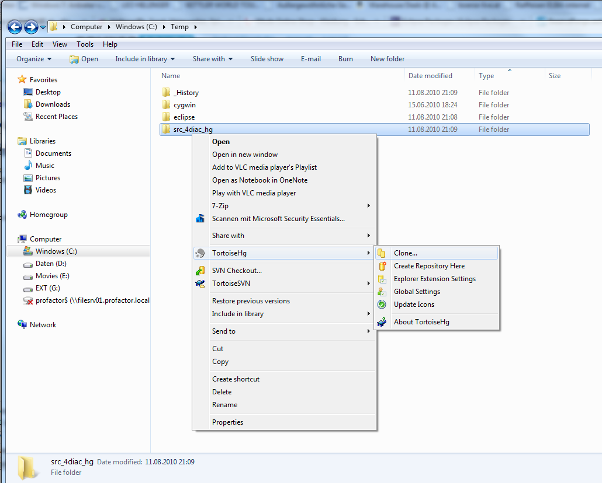
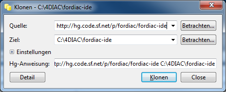
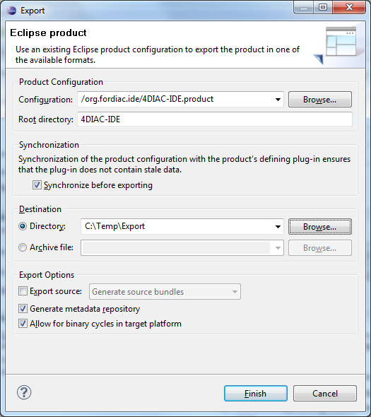

Building and Running 4DIAC-IDE
You have 2 options for building and running 4DIAC:
- Building and Running 4DIAC-IDE from Source
- Building a Binary 4DIAC-IDE Package from Source
Building and Running 4DIAC-IDE from Source
Run through the following steps to build and execute the 4DIAC-IDE from source:
- Get the development environment
- Check out the 4DIAC-IDE repository
- Import plug-ins into workspace
- Get the 4DIAC-LIB
- Run in development mode
Get the Development Environment
Eclipse Neon (or later) use Eclipse Modeling Tools edition.
In addition to the default Modeling Tool package you will need the following Eclipse Plug-ins. These can be installed via .
Check out the 4DIAC-IDE Repository
This section shows how to check out (clone) the 4DIAC-IDE repository using TortoiseHG. Details on TortoiseHG can be found here.
- Create a directory on your filesystem
- Right mouse click to that directory
- Select

- Specify Source Path ssh://[your sf id]@hg.code.sf.net/p/fordiac/fordiac-ide (for anonymous read only access to the repository you can also use the path: http://hg.code.sf.net/p/fordiac/fordiac-ide)

- Press Clone button
Import Plug-Ins into Workspace
- Under select the source directory from the file system and mark all projects to be imported.
- Wait till Eclipse finished building the project (look at the progress bar at the right bottom corner of the Eclipse main window)
- Check problems view for errors. If you get API Baseline not set errors you need to perform the following steps:
- Open the Eclipse preferences:
- Enter API in the top left search field. You should get three research results: 1. API Baselines, 2. API Errors/Warnings, and 3. API Use Scans
- You now have two options:
- Set an API Baseline for your developments:
- Select: API Baseline
- Click Add Baseline ...
- Enter a name, e.g., MyEclipse
- For the location select your Eclipse directory
- Press Finish
- Select your new baseline in the API Baselines window and press OK
- Set the API Baseline error to ignore:
- Select: API Baseline
- Set the option Missing API Baseline: which can be found in the bottom of the preferences window from Error to Ignore
- Open the Eclipse preferences within the product plugin:
- Wait until the target platform is resolved or press Reload and wait until it is resolved
- Press Set as Target Platform within the upper right corner and wait until the workspace is builded.
Run in Development Mode
- Open the 4DIAC-IDE.product from the org.fordiac.ide.product plug-in.
- In the Section of the Overview tab press Synchronize
- To use 4DIAC-IDE directly under this (development) Eclipse you need a type library and templates
- For the type library you need to put the typelibrary" folder into the directory with your eclipse.exe. How to get the default typelibrary is described here.
- For the templates copy the templates directory from the 4DIAC download into the directory with your eclipse.exe
- Press Launch an Eclipse Application in the Overview
Get 4DIAC-LIB
Currently the 4DIAC-LIB includes:
- IEC 61499 specific function blocks
- All IEC 61131-3 functions and function blocks
- Some OSCAT functions and function blocks
To use the existing 4DIAC-LIB within the 4DIAC-IDE build from source perform the following step:
- Use tortoiseHG to clone the library from: http://hg.code.sf.net/p/fordiac/fordiac-lib into a typelibrary folder of your Eclipse installation (folder containing eclipse.exe).
To use the existing 4DIAC-LIB within the 4DIAC-IDE run through the following steps:
- Use tortoiseHG to clone the library from: http://hg.code.sf.net/p/fordiac/fordiac-lib
- Simply copy the contents of the library into your projects or into the Tool Library directory of your 4DIAC-IDE (folders of the Windows explorer can directly be copied into the Type Navigator View)
- OR Select all (for existing libraries in the project) and refresh
Building your own IDE
A big drawback for running 4DIAC-IDE from source is that you need at least 2 Eclipse instances running. Especially on systems with little memory this can be an issue. If you still want to keep up with the with the developments performed in the Mercurial repository it makes sense to build a binary package. See Building a binary 4DIAC-IDE package from source for details on how this can be achieved.
Go to top
Building a Binary 4DIAC-IDE Package from Source
For building a binary 4DIAC-IDE package from the source code Eclipse provides a product export wizard. The necessary steps are:
- Have the 4DIAC-IDE source code in an Eclipse workspace as described in Building and Running 4DIAC-IDE from Source
- Press Eclipse Product Export Wizard in the Exporting Section of the product-file editor.

- Specify - e.g. 4DIAC-IDE
- Specify
- After pressing Finish your product configuration is exported.
- In the exported product, you need the typelibrary of an other 4DIAC-IDE and you have to copy or add the template directory of an other 4DIAC-IDE otherwise creating new FB types will not provide any template.
Where to go from here?
Go back to Development index:
Development Index
If you want to go back to the Start Here page, we leave you here a fast access
Start Here page
Or Go to top